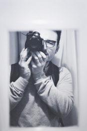

About

Originally from Hawick in the Scottish Borders, I began my studies in
2013 by embarking on the foundation Art & Design in Galashiels at
Borders College before moving up
to Edinburgh for 2 further years of studying on the Contemporary Art
Practice course at Edinburgh College graduating in 2017.
Since the very beginning I’ve had an interest in
documenting the world around me. I still remember in my preteens
showing my family some photographs I had taken whilst we were on
holiday in Nairn in the North of Scotland, and getting positive -
sometimes surprised - feedback.
Through college I’ve
developed further interests in creating video work and editing
software. Eventually I began photographing
friends at events and taking bookings for weddings. This accelerated
my experience and is still driving me to maintain as many personal
projects I can. These are mostly photography and video based, with
some graphic design related artworks also.
This collection
of images act as a representation of my work and active photography
practice.